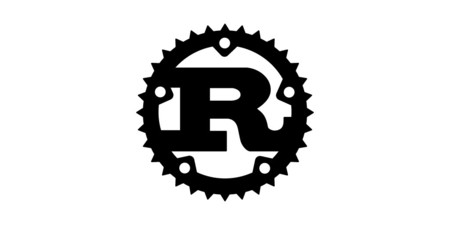

Lenguaje Rust
Descripción.
Rust
es un lenguaje de programación de sistemas que destaca por su énfasis en la seguridad de memoria, su rendimiento y su capacidad para la programación concurrente sin riesgos. Combina características de bajo nivel con abstracciones de alto nivel, siendo utilizado en el desarrollo de sistemas operativos, aplicaciones de red, dispositivos embebidos y proyectos de código abierto, gracias a su sistema de tipos estáticos y su ausencia de recolector de basura.
Características.
Seguridad de Memoria:
Rust
utiliza un sistema de propiedad y préstamo que previene errores de acceso a memoria, eliminando problemas comunes como fugas de memoria y desreferenciación nula.
Sin Recolector de Basura: Aunque es un lenguaje de alto nivel,
Rust
no tiene un recolector de basura, permitiendo un control preciso sobre la gestión de memoria sin el costo asociado de la recolección automática.
Concurrencia sin riesgos:
Rust
facilita la programación concurrente de manera segura, gracias a su modelo de propiedad que evita problemas como la carrera de datos y el bloqueo.
Sistema de Tipos Estáticos: El sistema de tipos estáticos de
Rust
ayuda a detectar errores en tiempo de compilación, brindando confianza y robustez al código.
Programación Funcional: Soporta programación funcional con características como funciones de orden superior y patrones de coincidencia, lo que permite un estilo de programación más expresivo.
Rendimiento: Diseñado para ofrecer alto rendimiento, Rust permite un control cercano del hardware sin sacrificar la velocidad de ejecución.
Lenguaje de Bajo Nivel con Abstracciones de Alto Nivel: Combina la eficiencia de programación de bajo nivel con abstracciones de alto nivel, facilitando el desarrollo de software complejo.
Usos.
Desarrollde Sistemas Operativos
:
Rust
es adecuado para el desarrollo de sistemas operativos debido a su control de bajo nivel y su énfasis en la seguridad de la memoria.
Programación de Dispositivos Empotrados: Por su rendimiento y control sobre la memoria,
Rust
se utiliza en el desarrollo de software para dispositivos embebidos y sistemas de tiempo real.
Redes y Desarrollo de Servidores: La concurrencia sin riesgos y el rendimiento hacen que
Rust
sea ideal para el desarrollo de servidores y aplicaciones de red de alto rendimiento.
Desarrollo de Herramientas:
Rust
es utilizado para construir herramientas y utilidades de sistema debido a su rendimiento y capacidad de control de bajo nivel.
Desarrollo de Compiladores: La seguridad de memoria y el rendimiento hacen que
Rust
sea una opción atractiva para el desarrollo de compiladores y herramientas relacionadas.
Proyectos de Código Abierto: Muchos proyectos de código abierto adoptan
Rust
debido a sus características de seguridad y rendimiento, como el navegador web Firefox de Mozilla.
Desarrollo de Aplicaciones Empresariales:
Rust
se utiliza cada vez más en el desarrollo de aplicaciones empresariales donde la seguridad y el rendimiento son aspectos críticos.
